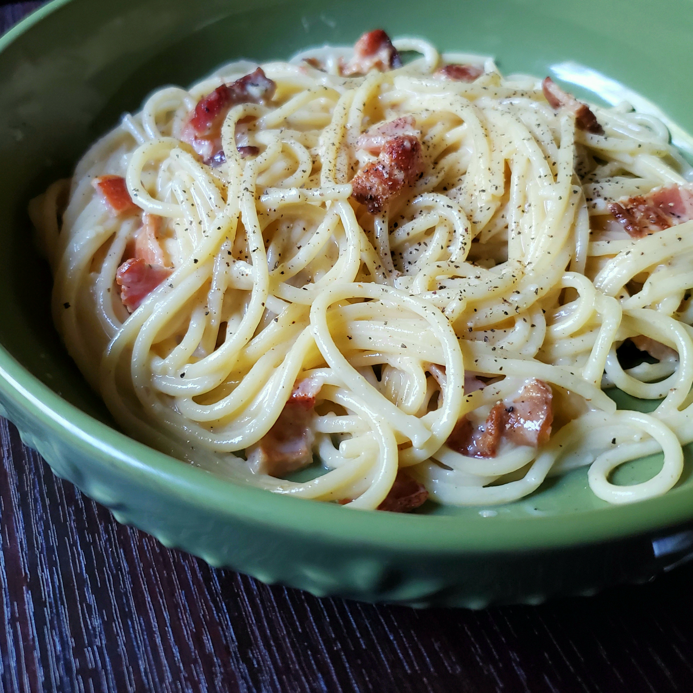

Italian Carbonara with Bacon

Description:
Truly authentic Italian carbonara with bacon coal miners' recipe.
Ingredients:
- 1 (16 ounce) package spaghetti
- 12 slices thick-cut, applewood-smoked bacon
- 2 tablespoons olive oil, divided
- 1 onion, finely chopped
- 2 large cloves garlic, minced
- ¼ cup dry vermouth
- 1 cup shredded Parmesan cheese
- ½ cup whipping cream (Optional)
- 4 eggs, beaten
- 1 tablespoon ground black pepper
Steps:
- Bring a large pot of lightly salted water to a boil.
Cook spaghetti in the boiling water, stirring occasionally,
until tender yet firm to the bite, about 12 minutes.
- Meanwhile, place bacon in a large skillet and cook over medium-high heat,
turning occasionally, until evenly browned, about 10 minutes.
Drain bacon slices on paper towels.
Reserve 2 tablespoons bacon fat in the skillet and discard the rest.
Chop bacon when cool enough to handle.
- Drain spaghetti, transfer to a large serving bowl, and mix in remaining 1 tablespoon oil.
Add bacon-onion mixture, Parmesan cheese, cream, eggs, and pepper to the hot pasta;
stir until spaghetti is well coated and sauce is creamy.

Nutrition Facts
Per serving:
512 calories; protein 21.2g; carbohydrates 47.5g; fat 25.2g; cholesterol 127.5mg; sodium 431.2mg.
Back to Homepage